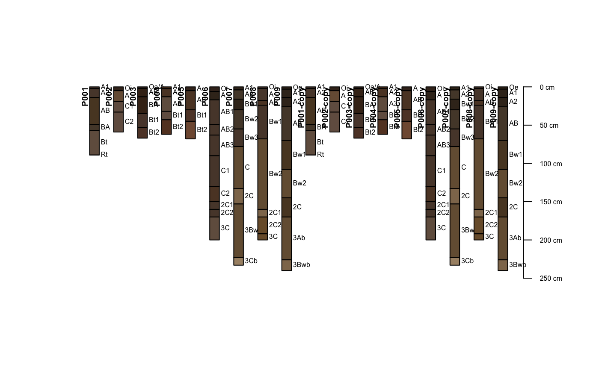
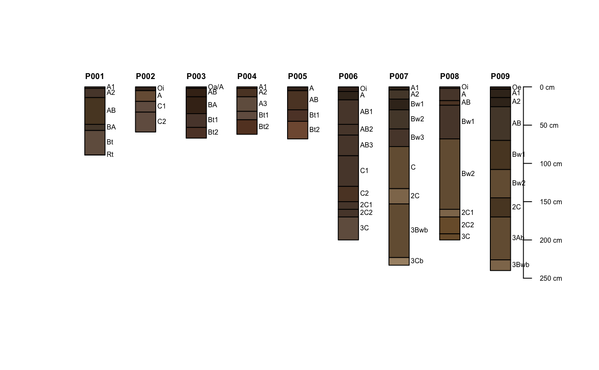

SPC-unique-methods.RdThis function returns a set of indices to a subset of profiles within a SoilProfileCollection object that are uniquely defined by a named set of horizon and site level attributes.
uniqueSPC(x, vars)
| x | a SoilProfileCollection |
|---|---|
| vars | a character vector naming those horizon and site level attributes that will be used to test for duplication |
signature(x = "SoilProfileCollection")Duplicates are identified via MD5 hash of select horizon and site level attributes.
A vector of integer indices that can be used to subset unique profiles from the original SoilProfileCollection object.
# use the digest library to detect duplicate data data(sp1) sp1$soil_color <- with(sp1, munsell2rgb(hue, value, chroma)) # upgrade to SoilProfileCollection depths(sp1) <- id ~ top + bottom site(sp1) <- ~ group # make a copies s.1 <- sp1 s.2 <- sp1 # update IDs in second copy profile_id(s.2) <- sprintf('%s-copy', profile_id(s.2)) # union SPCs s <- union(list(s.1, s.2)) # check plot(s)#># digests are computed from horizon-level data only # horizon boundaries and 'prop' # result is an index of unqique profiles u <- unique(s, vars=c('top', 'bottom', 'prop')) # compare with and without dupes: # note subsetting of SoilProfileCollection cbind(dupes=length(s), no.dupes=length(s[u, ]))#> dupes no.dupes #> [1,] 18 9#>